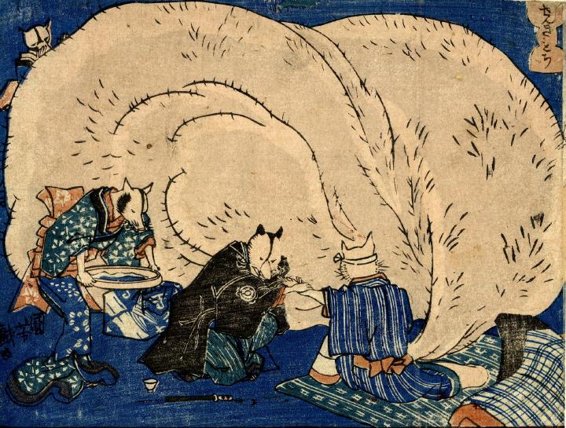

陰嚢が大きくなりすぎて床に臥す狸。医者の狸が脈をみている。
著作者：一勇斎国芳／出典：親書誌：U426_nichibunken_0257：せんきもち 狸の七ふく神；センキモチタヌキノシチフクジン／日付：2011／資源識別子：U426_nichibunken_0257_0001_0000
Copyright (c)2010- International Research Center for Japanese Studies, Kyoto, Japan. All rights reserved.